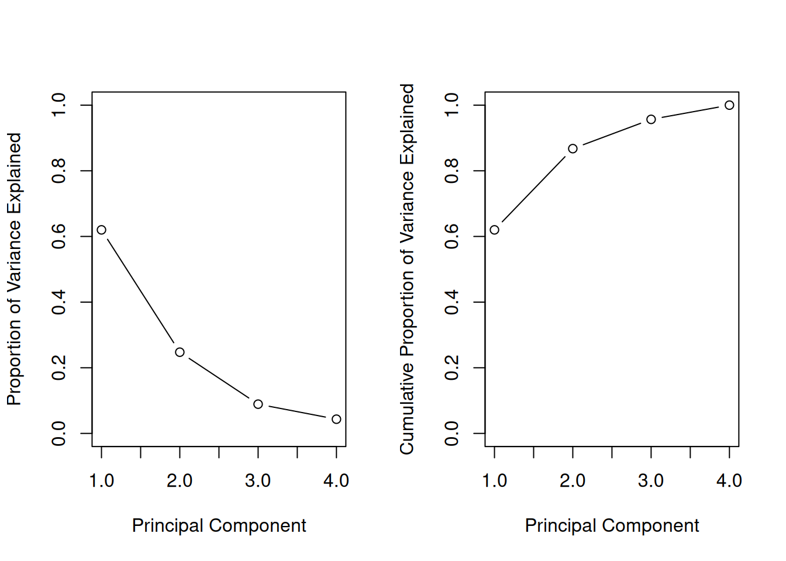
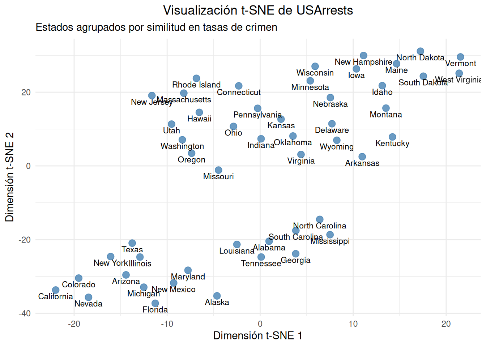
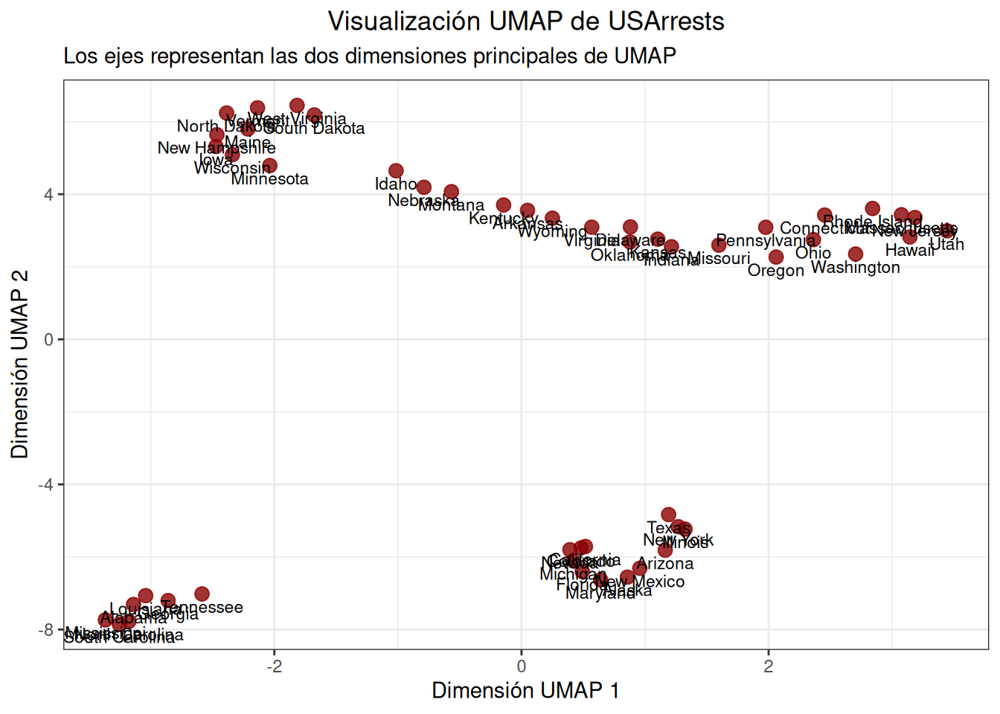

## Calculamos las componentes principales mediante la función `prcomp`pr.out <-prcomp(USArrests, scale =TRUE)names(pr.out)
[1] "sdev" "rotation" "center" "scale" "x"
Las variables center y scale corresponden a la media y desviación estándar de las variables que se emplearon para el escalado, antes de la transformación. Además, la matriz rotation contiene los pesos de las componentes principales calculadas.
Podemos calcular también el porcentaje de varianza explicada.
###pr.out$sdev
[1] 1.5748783 0.9948694 0.5971291 0.4164494
###pr.var <- pr.out$sdev^2pr.var
[1] 2.4802416 0.9897652 0.3565632 0.1734301
###pve <- pr.var /sum(pr.var)pve
[1] 0.62006039 0.24744129 0.08914080 0.04335752
Podemos representar gráficamente este porcentaje para cada componente, así como el PVE acumulado.
par(mfrow =c(1, 2))plot(pve, xlab ="Principal Component",ylab ="Proportion of Variance Explained", ylim =c(0, 1),type ="b")plot(cumsum(pve), xlab ="Principal Component",ylab ="Cumulative Proportion of Variance Explained",ylim =c(0, 1), type ="b")

Figura 6.3
6.1.1 t-SNE
El paquete Rtsne implementa este algoritmo de reducción de dimensionalidad en R.
# Instalar y cargar librerías necesarias# install.packages("Rtsne")# install.packages("ggplot2")library(Rtsne)library(ggplot2)# Cargar y preparar los datosdata("USArrests")# t-SNE falla si hay filas duplicadas. Aunque USArrests no suele tenerlos,# es una buena práctica comprobarlodf_unique <-unique(USArrests)# t-SNE se basa en distancias. Si una variable tiene valores de 1000 y otra de 1,# la primera dominará el cálculo. La función 'scale' normaliza los valores para que# todas las variables queden en rangos comparablesdf_scaled <-scale(df_unique)# Ejemcutamos el algoritmo t-SNEset.seed(42) # reproducible# El parámetro 'perplexity' controla el "número efectivo de vecinos".# Normalmente se usa 30, pero como USArrests es muy pequeño (50 datos),# debemos bajarlo (el máximo recomendado suele ser (N-1)/3).# Le asignamos un valor de 10.tsne_results <-Rtsne(df_scaled, dims =2, # Queremos proyectar a 2 dimensionesperplexity =10, # Ajustado por el tamaño pequeño del datasetverbose =TRUE, max_iter =1000)
Performing PCA
Read the 50 x 4 data matrix successfully!
OpenMP is working. 1 threads.
Using no_dims = 2, perplexity = 10.000000, and theta = 0.500000
Computing input similarities...
Building tree...
Done in 0.00 seconds (sparsity = 0.719200)!
Learning embedding...
Iteration 50: error is 55.413555 (50 iterations in 0.00 seconds)
Iteration 100: error is 54.751037 (50 iterations in 0.00 seconds)
Iteration 150: error is 55.937429 (50 iterations in 0.00 seconds)
Iteration 200: error is 54.711323 (50 iterations in 0.00 seconds)
Iteration 250: error is 52.786834 (50 iterations in 0.00 seconds)
Iteration 300: error is 1.819072 (50 iterations in 0.00 seconds)
Iteration 350: error is 1.011247 (50 iterations in 0.00 seconds)
Iteration 400: error is 0.510596 (50 iterations in 0.00 seconds)
Iteration 450: error is 0.364691 (50 iterations in 0.00 seconds)
Iteration 500: error is 0.331375 (50 iterations in 0.00 seconds)
Iteration 550: error is 0.309632 (50 iterations in 0.00 seconds)
Iteration 600: error is 0.300417 (50 iterations in 0.00 seconds)
Iteration 650: error is 0.293517 (50 iterations in 0.00 seconds)
Iteration 700: error is 0.291822 (50 iterations in 0.00 seconds)
Iteration 750: error is 0.242082 (50 iterations in 0.00 seconds)
Iteration 800: error is 0.238562 (50 iterations in 0.00 seconds)
Iteration 850: error is 0.240463 (50 iterations in 0.00 seconds)
Iteration 900: error is 0.234624 (50 iterations in 0.00 seconds)
Iteration 950: error is 0.230820 (50 iterations in 0.00 seconds)
Iteration 1000: error is 0.237176 (50 iterations in 0.00 seconds)
Fitting performed in 0.06 seconds.
# Etraemos las coordenadas generadas para repres. gráficatsne_plot_data <-data.frame(X = tsne_results$Y[, 1],Y = tsne_results$Y[, 2],State =rownames(df_unique) # Nombres de los estados)
# Visualización con ggplot2ggplot(tsne_plot_data, aes(x = X, y = Y)) +geom_point(color ="steelblue", size =3, alpha =0.8) +geom_text(aes(label = State), vjust =1.5, size =3) +# Etiquetas de estadostheme_minimal() +labs(title ="Visualización t-SNE de USArrests",subtitle ="Estados agrupados por similitud en tasas de crimen",x ="Dimensión t-SNE 1",y ="Dimensión t-SNE 2" ) +theme(plot.title =element_text(hjust =0.5))

Figura 6.4
6.1.2 UMAP
El paquete umap en R implementa este algoritmo.
# Instalar y cargar librerías# install.packages("umap")# install.packages("ggplot2")library(umap)library(ggplot2)# Cargar y preparar los datosdata("USArrests")# UMAP, como t-SNE, se basa en distancias, por lo que es recomendable# escalar los valores de las variablesdf_scaled <-scale(USArrests)# Definir y ejecutar el algoritmo UMAPset.seed(42) # Para reproducibilidad# Definimos una configuración específica para datasets pequeños como USArrests (N=50)custom_umap_config <- umap.defaultscustom_umap_config$n_neighbors <-5# El valor por defecto es 15, pero 5 o 10 es mejor para N=50custom_umap_config$min_dist <-0.1# Distancia mínima entre puntos proyectadoscustom_umap_config$random_state <-42# Semilla# Ejecutar UMAPumap_results <-umap(df_scaled, config = custom_umap_config)# 4. Preparar datos para graficar# UMAP devuelve el resultado en el slot 'layout'umap_plot_data <-data.frame(X = umap_results$layout[, 1],Y = umap_results$layout[, 2],State =rownames(USArrests))# 5. Visualización con ggplot2ggplot(umap_plot_data, aes(x = X, y = Y)) +geom_point(color ="darkred", size =3, alpha =0.8) +geom_text(aes(label = State), vjust =1.5, size =3) +theme_bw() +labs(title ="Visualización UMAP de USArrests",subtitle ="Los ejes representan las dos dimensiones principales de UMAP",x ="Dimensión UMAP 1",y ="Dimensión UMAP 2" ) +theme(plot.title =element_text(hjust =0.5))

Figura 6.5
Al igual que con t-SNE, los estados que se agrupan en el gráfico UMAP tienen perfiles criminales muy similares (por ejemplo, los estados del Sur con altas tasas de crímenes violentos a menudo se agrupan en una región, mientras que los estados más seguros se agrupan en otra). La ventaja de UMAP es que la distancia entre estos grupos de clústeres a menudo se interpreta como una representación más fiel de la distancia global que la que proporciona t-SNE.
James, W., G. (2021). An Introduction to Statistical Learning with Applications in R (2.ª ed.). Springer. https://www.statlearning.com/